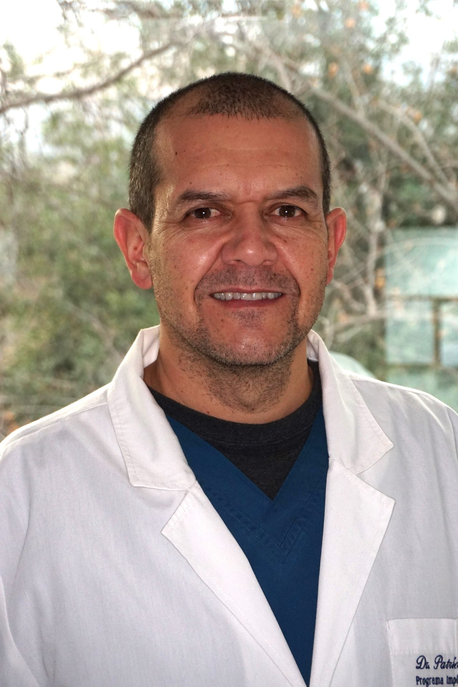

Dr. Patricio Vial U.
Rehabilitador Oral e Implantólogo · Ortodoncia Richard, Las Condes
Registro Nacional de Prestadores Individuales, Superintendencia de Salud N° 40662 · Verificar
Especialista en Rehabilitación Oral de la Universidad de Chile e implantólogo. Coordinador del área quirúrgica del Programa de Especialización en Implantología Buco Máxilo Facial de la Universidad Andrés Bello.
Trayectoria
Especialista en Rehabilitación Oral de la Universidad de Chile, con diplomado en Cirugía de Implantes y Magíster en Pedagogía Universitaria.
Es Coordinador del área quirúrgica del Programa de Especialización en Implantología Buco Máxilo Facial de la Universidad Andrés Bello (UNAB).
En Ortodoncia Richard atiende la rehabilitación oral, las coronas y los implantes, y trabaja junto a los ortodoncistas en los casos que necesitan ambos tratamientos: por ejemplo, abrir o cerrar espacios antes de un implante o restaurar dientes al terminar la ortodoncia.
Formación
- Cirujano Dentista — Universidad de Chile
- Especialista en Rehabilitación Oral — Universidad de Chile
- Diplomado en Cirugía de Implantes — Universidad de Chile
- Magíster en Pedagogía Universitaria — Universidad Mayor
Cargos académicos y gremiales
- Coordinador área quirúrgica, Programa de Especialización en Implantología Buco Máxilo Facial — UNAB
Sociedades científicas
- Colegio de Cirujano Dentistas de Chile